RTR: Imperium Surrectum
RTR: Imperium SurrectumMinor Greeks 2: Emporion and the far west
2023-08-16 · Tarnholm
Hello, and welcome to a brand new dev diary! Today we are showcasing the Greeks that settled furthest to the West.
EMPORION was the most significant Greek settlement on the Iberian Peninsula. Its name means "trade port", and it was initially founded as such by merchants either from Massalia or Massalia's mother city Phokaia in the early 6th century BC. The best summary of its internal history is found in the Geography of Strabo (ca. 63 BC-25 AD), possibly based on an account of the polymath Poseidonios of Apameia (ca. 135BC-51 BC):
"The Emporitans formerly lived on a little island off the shore, which is now called Old City (Palaiopolis), but they now live on the mainland. And their city is a double one because, in former times, the city had for neighbours some of the Indicetans, who, although they maintained a government of their own, wished, for the sake of security, to have a common wall of circumvallation with the Greeks, with the enclosure in two parts — for it has been divided by a wall through the centre; but in the course of time the two peoples united under the same constitution, which was a mixture of both Barbarian and Greek laws — a thing which has taken place in the case of many other peoples." (Strab. 3.4.8C160)
As Poseidonios respectively Strabo imply, Emporion was a mix of cultures: The Phokaian Greeks who came here lived together with the Iberian Indiceti, minted coins in the Carthaginian style and also cultivated contacts with the Celtiberians and possibly Aquitanians. In 218 BC, a Roman army under the father and uncle of Scipio Africanus landed here, beginning the conquest of Iberia, which Scipio would complete. Emporion also served as a Roman ally during the so-called "Fiery War" and the Numantine War, in which Celtiberians and Lusitanians resisted the Romans for over twenty years from 154 to 133 BC. In the civil wars, Emporion may have supported Pompeius; therefore, Caesar ended its independence and settled a colonia of his veterans here.
Ruins, Emporion
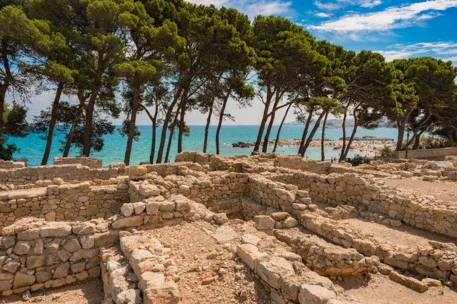
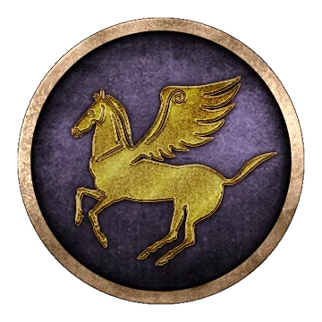
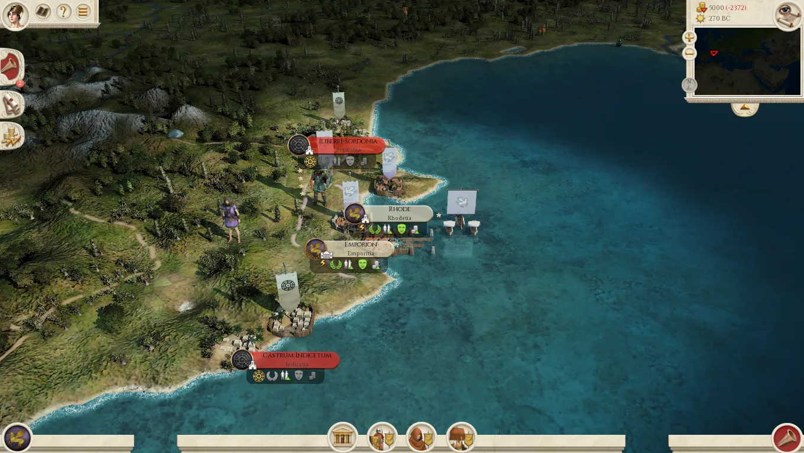
Emporionite Hoplites:
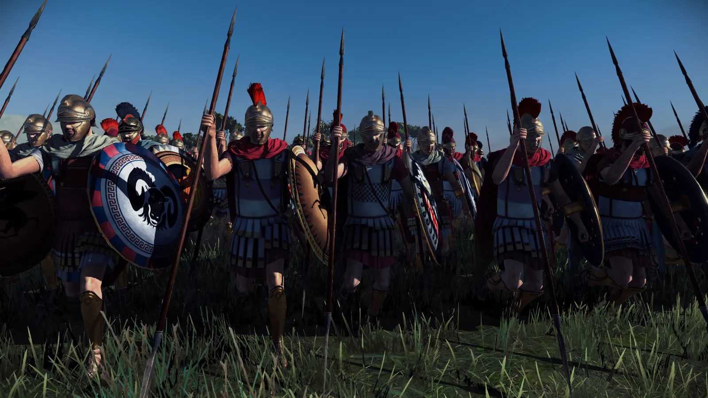
Our next new faction is AKRAGAS, Sicily's second-largest Greek city after Syracuse. Founded around 600 BC by colonists from nearby Gela and Gela's mother city Rhodes, it quickly rose to fame under the horrible tyrant Phalaris (r. 570-555/554 BC), who invented the torture instrument known as the brazen bull. In the early 5th century, we find Akragas under Theron, another tyrant and supporter of Gelon of Syracuse: together, they defeated the Carthaginians at the battle of Himera in 480 BC. Akragas was now not only a great fortress, but also the centre of a small kingdom and a thriving hub of trade and culture. This golden age lasted until the end of the century when a new Carthaginian invasion shattered Sicily. In 406 BC, the attackers besieged Akragas, and after a prolonged siege, the city was sacked in 405 BC. The city declined until Timoleon brought Peloponnesian settlers to the city in 338 BC, rejuvenating its power. In 270 BC, Akragas is inclined towards Carthage. It would be taken by both sides during the First Punic War, but survived as an autonomous power until 210 BC, when the Romans captured it again and this time for good.
Valley of Temples, Akragas, modern Agrigento, Sicily:
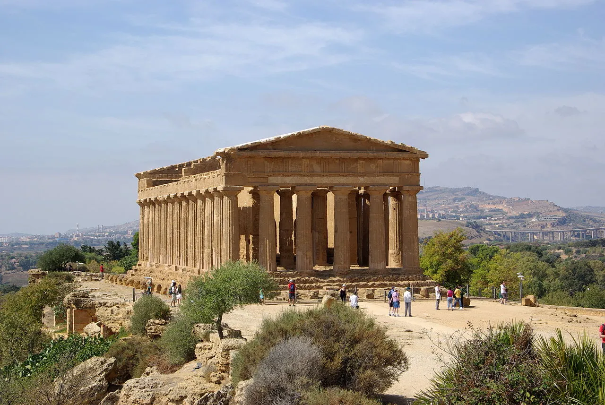
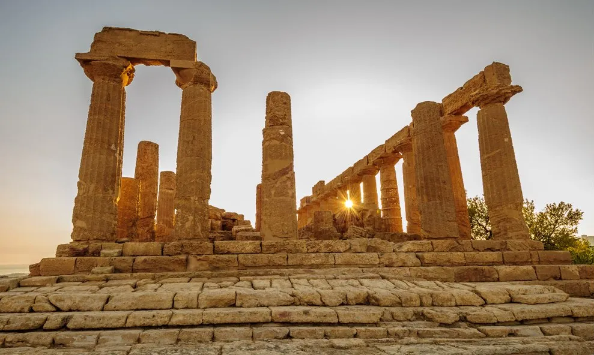
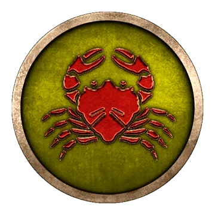
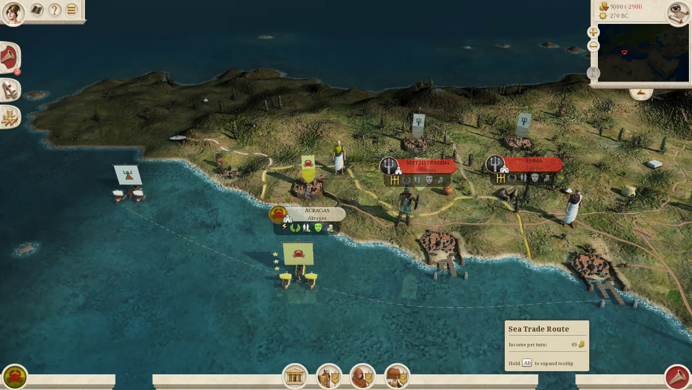
Sicel Thureophoroi:
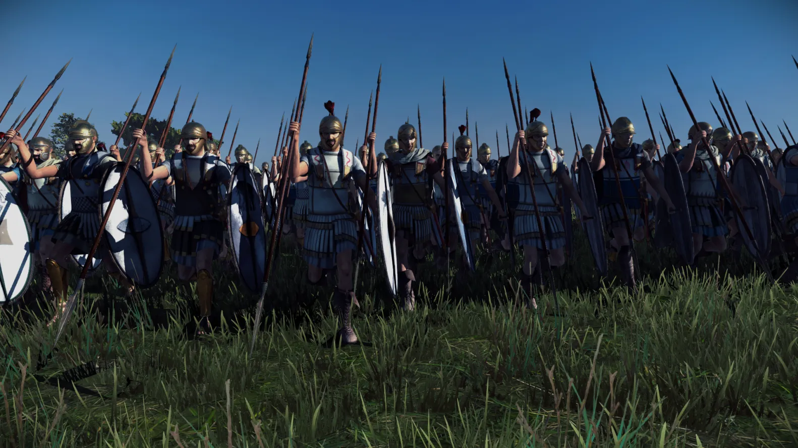
Sicel Peltophoroi:
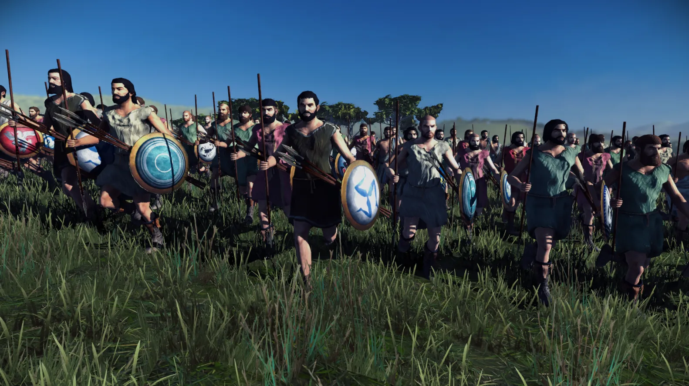
Peloponnesian Hoplites:
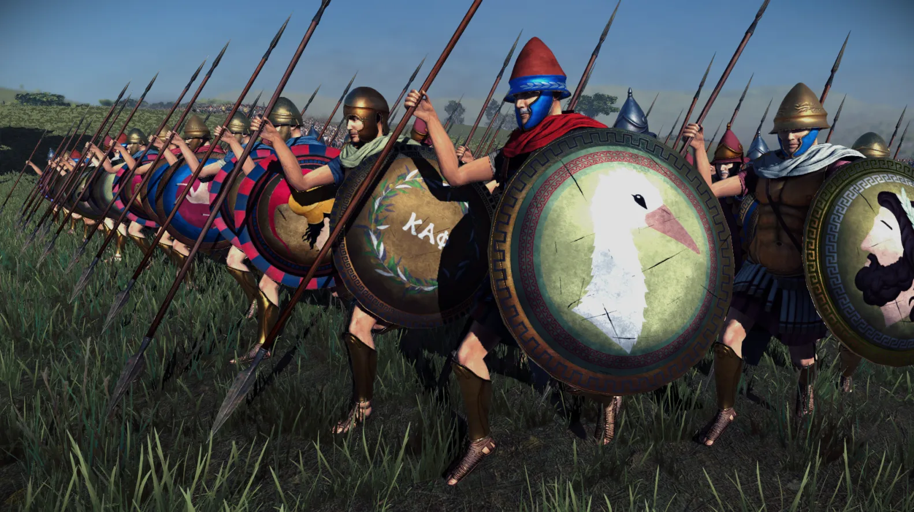
TARAS, known in Latin as Tarentum, modern Taranto, was one of the largest cities of Magna Graecia, the lands in Southern Italy (and Sicily) settled by Greeks. It was founded by the Spartan Phalanthos in the late 8th century BC under somewhat unclear circumstances. In any case, Phalanthos was allegedly shipwrecked on his way to Italy and saved by a dolphin - hence the cute faction icon (the myth of a founder called Taras was later modelled around it). The oracle of Delphi had predicted that the Tarantines would face heavy struggles with the natives of the regions, and indeed battles with the Iapygians, Samnites, Messapians, Peucetians, Lucians and Bruttians shaped the history of the city. In 473 BC, the Messapians routed a Tarantine army and the aristocracy was overthrown. The new democracy soon fortified the city and changed its culture: the dead were now buried within the city's borders - the ONLY known case for this practice from the Greek AND Roman world. Philosophy schools were founded, and though a member of the Italiote League of Greek cities, Taras established amicable relations with the League's enemy Syracuse. When Dionysios I (r. 405-367BC) of Syracuse crushed the League's army in a brutal campaign in the early 4th century BC, he made Taras their new capital. Here, the philosopher Archytas (ca. 425-350 BC) became the leading man. Seven times he was elected as strategos - against the democratic laws - and never lost a battle while promoting Pythagorean ideas. The flourishing Polis did, however, face mounting pressure from the neighbouring Italic mountain tribes. In their plight, they continuously called foreign rulers for help: Sparta (342-338 BC, 303 BC), Epeiros (334-331 BC) and Syracuse (298 BC) all defended the city's autonomy against the Messapians and Lucanians, before Rome broke its friendship treaty with Taras in 282 BC. Famously, Pyrrhos of Epeiros landed in Italy and fought for the city, but he eventually gave up and retreated to Greece. In 272 BC, Taras was forced to submit to Rome. Yet, this wasn't the end: Taras continued to resist Roman orders and, in 213 BC, went over to Hannibal. It was retaken in 209 BC and punished, but further minor conflicts followed before Taras became a quiet and pleasant city in the imperial period -Roman lyric poet Horace spent his holidays here.
Taras on the Dolphin, coin of Taras:
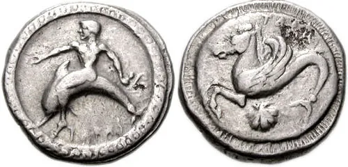
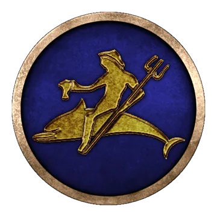
The city of Taras is under Roman rule at the game's start, but it can regain its independence if a revolt were to happen.
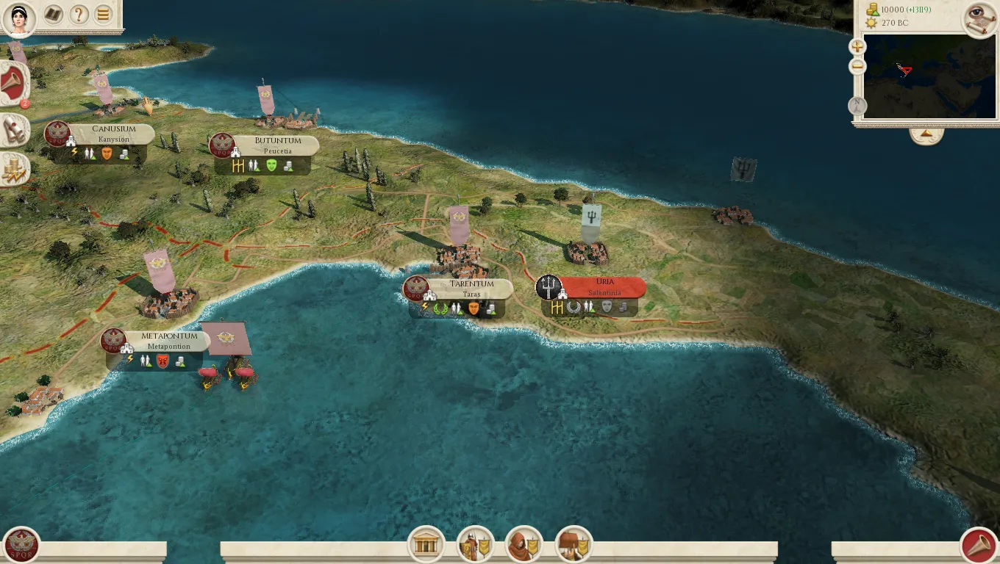
Italiote Epibatai:
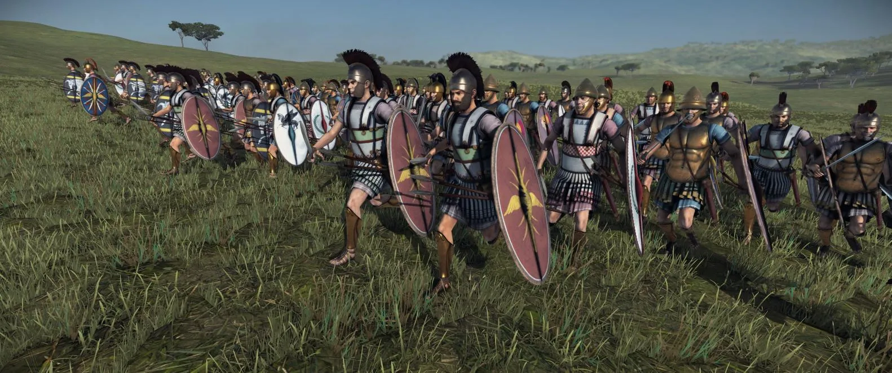
Italiote Hoplites:
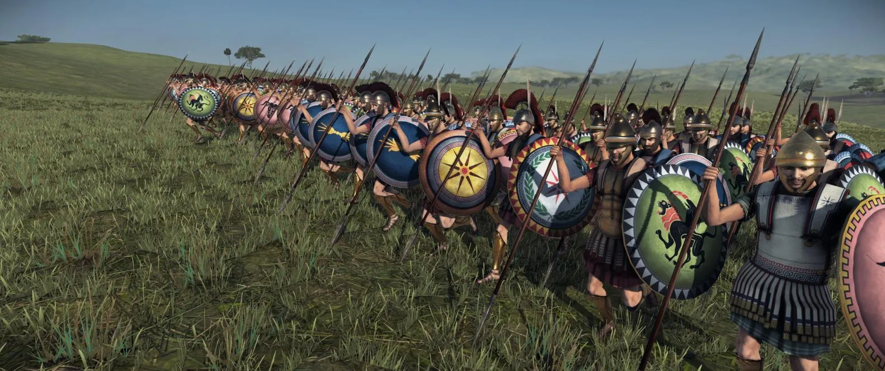
Tarantine Cavalry:
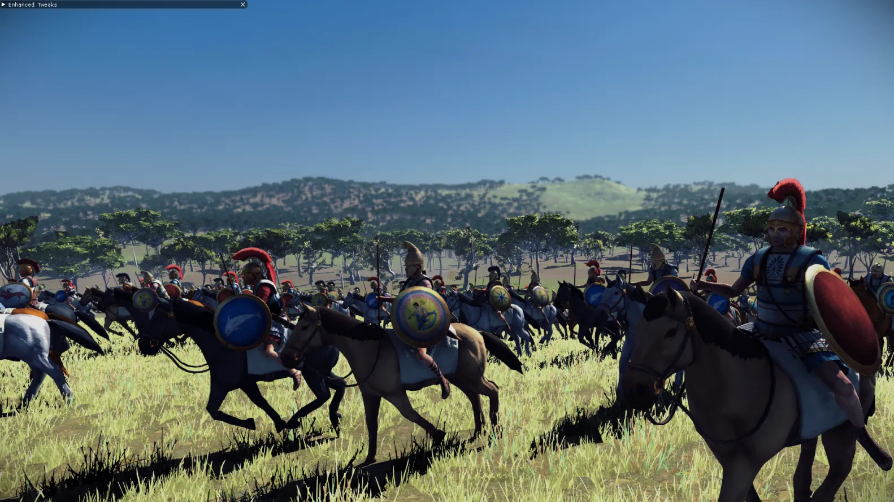
Deuteroi:
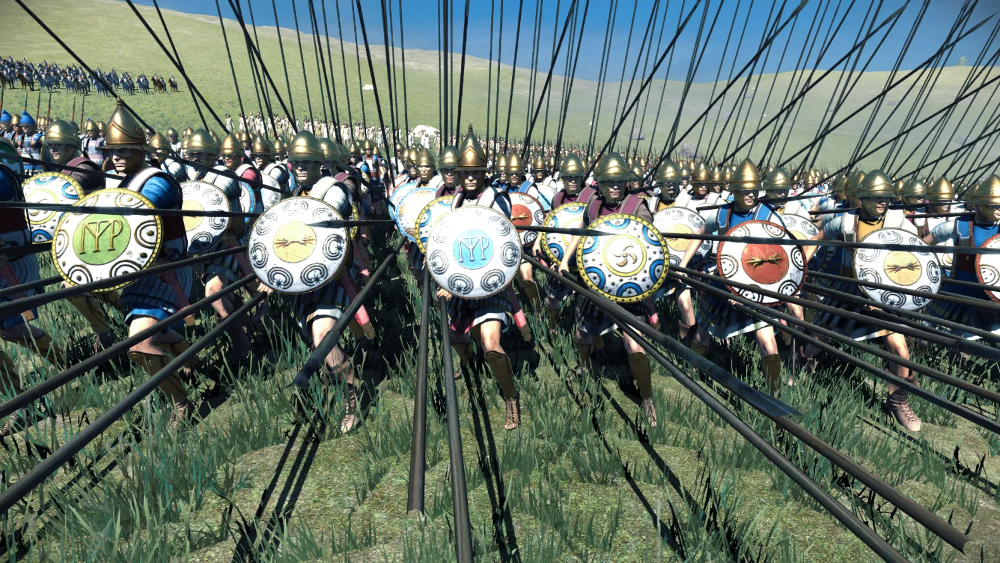
ISSA is our final unplayable faction in this preview. The Greek settlement on the modern Croatian island of Vis was set up as a Syracusan colony by Dionysios I (r. 405-367BC), tyrant of Syracuse, in the early 4th century BC. As part of the Syracusan empire, the Issaians set up their own colonies at Tragurion and Epetion on the mainland and the Korkyra Melaina island (Korčula). At the same time, the Delmatae, one of the most potent confederations in northern Illyricum, conquered Salona, a Thracian settlement in the spot of what is now Solin. A few decades later, when the Delmatae was seemingly distracted by internal disorder, Issa sent a colony to Salona, overthrew the Illyrians and added the place to its small empire. Yet, Dionysios had already passed away by this time, and Issa's position was precarious, though it seems to have retained close contacts with Syracuse. Following the conclusion of an alliance between Rome and Syracuse in 263 BC, Issa established friendly relations with the Roman Republic. Yet, when Agron of the Ardiaei erected a mighty Illyrian kingdom in the mid-3rd century BC, Issa and its colonies accepted his position. In 231 BC, Agron died from heavy drinking, and his wife, Teuta, succeeded him. Teuta immediately dispatched the most significant part of her forces to plunder Epeiros, and in concert with the Dardanians, a kingdom in the Balkans, Issa and its colonies revolted against the Illyrian kingdom. But the empire struck back: Teuta's forces quickly captured Salona and Korkyra Melaina and put Issa under siege. The desperate Issaians sent for help, and the senate listened: As Syracuse was Rome's most important ally at the time, the senators thought it wise to help Issa. The First Roman-Illyrian War (229/228 BC) followed, and ten years later, when Demetrios of Pharos occupied Issa's territory, Rome went to war once again. Issa remained free until the time of Augustus and is mentioned as an ally of Caesar. In 270 BC, this is far in the future, but this small faction can become an essential base for a Roman or Syracusan player in the East.
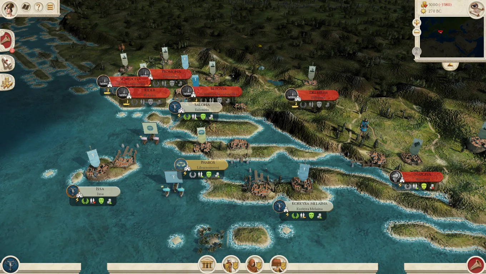
Issian Hoplites:
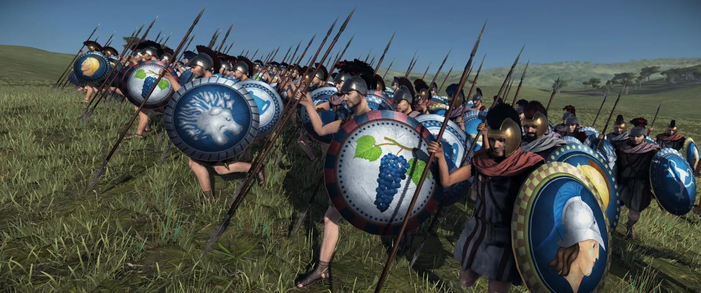
Issaian Epibatai:
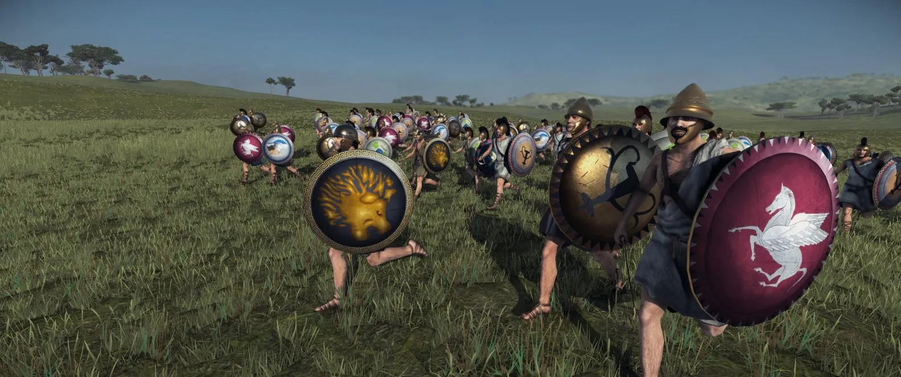
As a little extra treat, here are 2 AOR units from Ancona:
Ankonitan Hoplites:
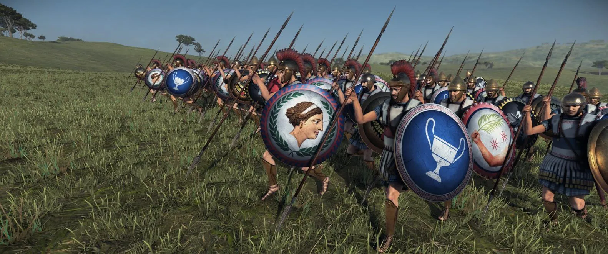
Ankonitan Archers:
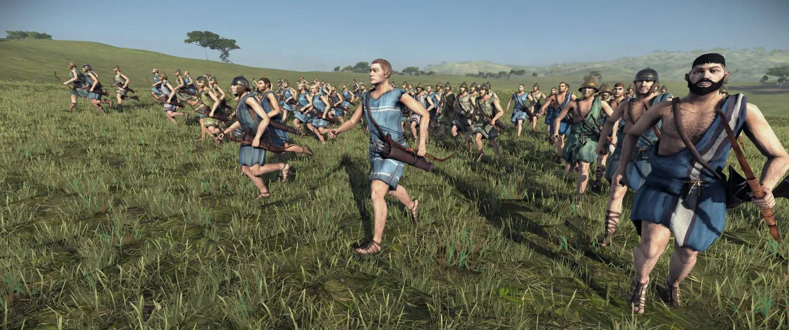
I hope you all liked this, the second preview of our unplayable Greek minors being added to our ever-growing list of factions. If you still have not seen your favourite yet, fret not, as more are coming, and with that, I bid you all farewell for this time. Make sure to discuss these new additions in a channel.